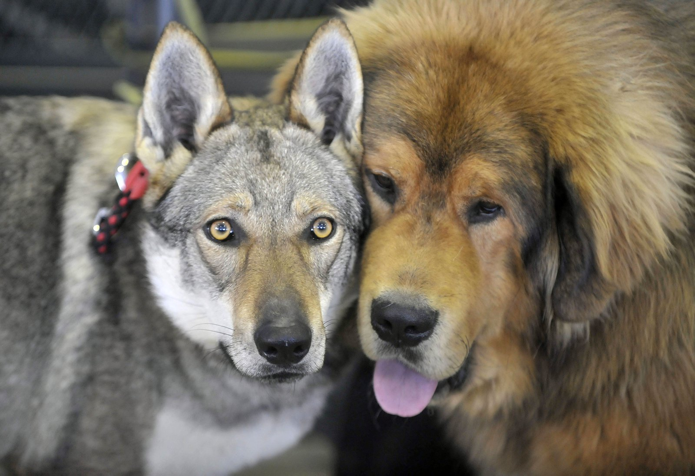

Reason why Wolf Dogs are better
- They look inherently wise & loyal for picture opportunities.

The Tibetan Mastiff
(From Wikipedia)
Considered a primitive breed. It typically retains the hardiness which would be required for it to survive in Tibet, Ladakh and other high-altitude Himalayan regions.
Instinctive behaviors, including canine pack behavior, contributed to the survival of the breed in harsh environments. It is one of the few primitive dog breeds that retains a single estrus per year instead of two, even at much lower altitudes and in much more temperate climates than its native climate. This characteristic is also found in wild canids such as the wolf and other wild animals. Since its estrus usually takes place during late autumn, most Tibetan Mastiff puppies are born between December and January.
Its double coat is long, subject to climate, and found in a wide variety of colors, including solid black, black and tan, various shades of red (from pale gold to deep red) and bluish-gray (dilute black), often with white markings. As of 2014, some breeders had begun marketing white Tibetan mastiffs. These dogs are actually very pale gold, not truly white.
The coat of a Tibetan Mastiff lacks the unpleasant big-dog smell that affects many large breeds. The coat, whatever its length or color(s), should shed dirt and odors. Although the dogs shed somewhat throughout the year, there is generally one great molt in late winter or early spring and sometimes another, lesser molt in the late summer or early autumn. (Sterilization of the dog may dramatically affect the coat as to texture, density and shedding pattern.)
Reason why Wolf Dogs are better
- They are glorious animals that look really angry when they're born.
- They have the souls of a warrior

The Tibetan Mastiff
(From Wikipedia)
Considered a primitive breed. It typically retains the hardiness which would be required for it to survive in Tibet, Ladakh and other high-altitude Himalayan regions.
Instinctive behaviors, including canine pack behavior, contributed to the survival of the breed in harsh environments. It is one of the few primitive dog breeds that retains a single estrus per year instead of two, even at much lower altitudes and in much more temperate climates than its native climate. This characteristic is also found in wild canids such as the wolf and other wild animals. Since its estrus usually takes place during late autumn, most Tibetan Mastiff puppies are born between December and January.
Its double coat is long, subject to climate, and found in a wide variety of colors, including solid black, black and tan, various shades of red (from pale gold to deep red) and bluish-gray (dilute black), often with white markings. As of 2014, some breeders had begun marketing white Tibetan mastiffs. These dogs are actually very pale gold, not truly white.
The coat of a Tibetan Mastiff lacks the unpleasant big-dog smell that affects many large breeds. The coat, whatever its length or color(s), should shed dirt and odors. Although the dogs shed somewhat throughout the year, there is generally one great molt in late winter or early spring and sometimes another, lesser molt in the late summer or early autumn. (Sterilization of the dog may dramatically affect the coat as to texture, density and shedding pattern.)
The physical characteristics of an animal created by breeding a wolf to a dog are not predictable, similar to that of mixed-breed dogs. In many cases the resulting adult wolfdog may be larger than either of its parents due to the genetic phenomenon of heterosis (commonly known as hybrid vigor).[25] Breeding experiments in Germany with poodles and wolves, and later on with the resulting wolfdogs showed unrestricted fertility, mating via free choice and no significant problems of communication (even after a few generations). However, the offspring of poodles with either coyotes and jackals, all showed a decrease in fertility, significant communication problems, and an increase of genetic diseases after three generations of interbreeding between the hybrids. The researchers therefore concluded that domestic dogs and wolves are the same species.[19]